我们的图标是 w7-a.png（透明底，1024）。旁边的图标是为这个模拟页画的一套 Windows 风格陪衬图标， 尺寸、间距、任务栏高度都按 Windows 11 的实际比例来（桌面图标 48px、任务栏 56px、任务栏图标 28px）。
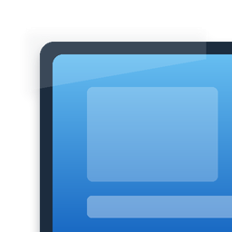
此电脑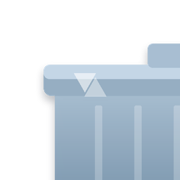
回收站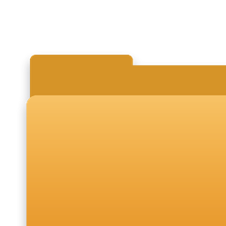
文件资源管理器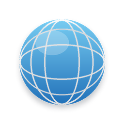
网络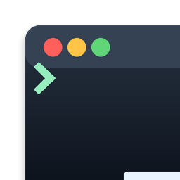
终端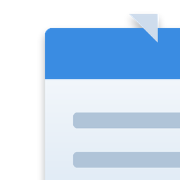
记事本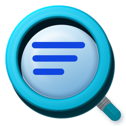
agent chat viewer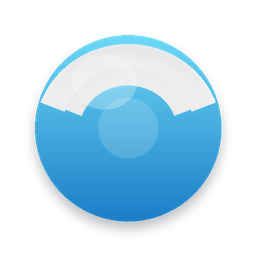
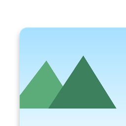
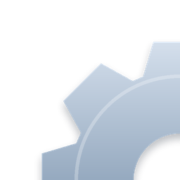
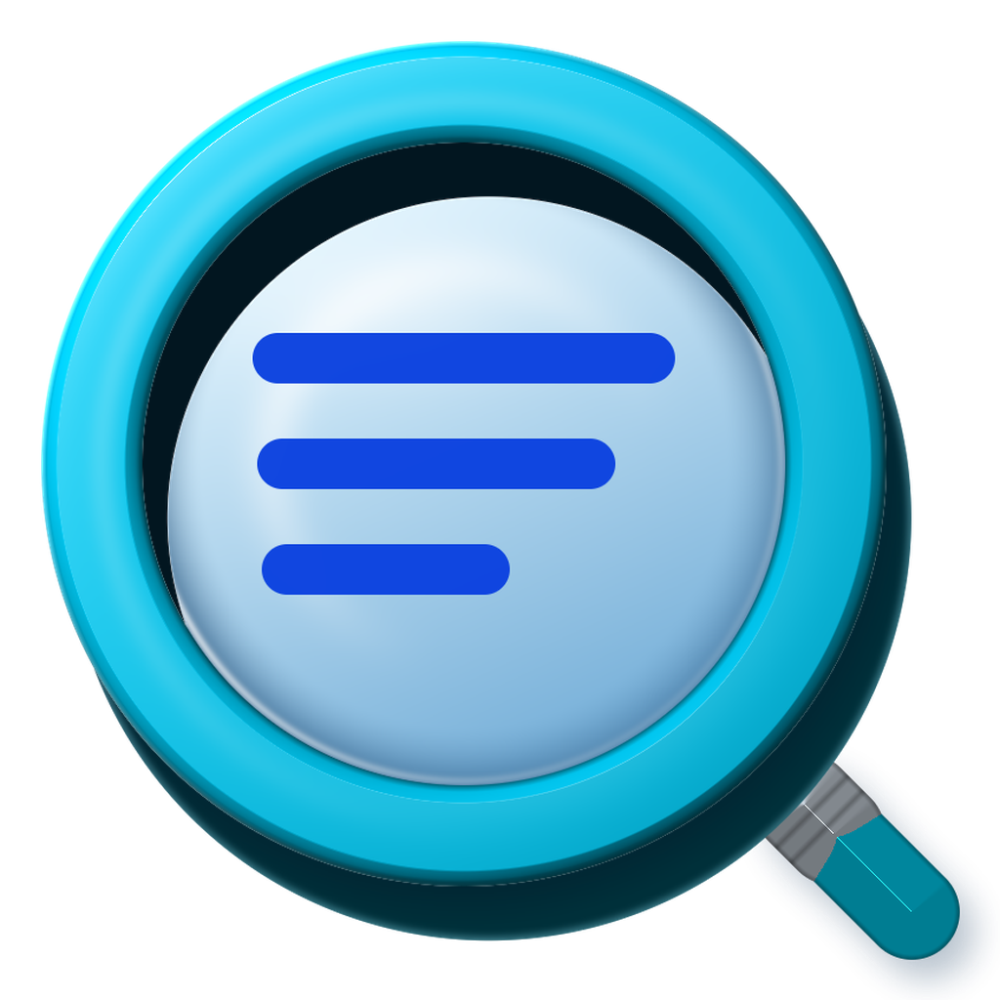
w7-a.png（透明底）缩到 48px；任务栏用 28px 与 20px。
陪衬图标（此电脑 / 回收站 / 文件资源管理器 / 网络 / 终端 / 记事本 / 浏览器 / 设置 / 照片）是为这个模拟画的，
文件在 mock-*.png，由 make_mock_icons.py 生成，只用于看效果，不会进应用。
任务栏背景用了半透明 + 模糊，和 Windows 11 的实际效果接近。